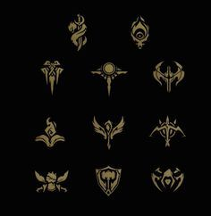

El término Campeón es utilizado para un ser ficticio ya sea humano o no, él cuál es invocado a un mapa determinado para conformar grupos de 3 o 5 individuos controlados por los Invocadores.
Cada uno de estos seres cuentan con un Kit de habilidades únicas y distintos entre sí, con diferentes características de Daño, Vida, Defensa, Velocidad, Mejora, etc. estás habilidades se determinan dependiendo de los Atributos de los Campeones.

Tipos de campeones:Atributos principales
Carry AP (Poder de habilidad): Centrado en el uso de mana nukkes. Realizan gran daño mágico instantáneamente y normalmente carecen de resistencia. Dependiendo de cada mago existen dos build recomendadas.
Carry DPS: Más conocido como AdCarry. Su función es hacer daño físico continuo. "DPS" son las siglas de Daño por Segundo. Al igual que los anteriores, no tienen resistencia y sobre todo al final de partida gozan de mucho daño.
Tanque: Su objetivo es provocar a los enemigos para que usen sus mejores habilidades sobre el y aun así sobrevivir, por lo tanto debe de ser un personaje con mucha resistencia (vida, armadura, y resistencia mágica).
Luchadores: Más conocido como "OffTank" su cometido es ser lo suficientemente duro para aguantar un ataque de un mago o un DPS y acabar con ellos lo antes posible. Es un personaje parecido al tanque pero que puede pasar sin control del adversario optando por tener más daño.
Asesino: Su principal cometido es acabar rápidamente con los débiles del equipo enemigo de forma furtiva. Suelen contar con habilidades como invisibilidad que permiten moverse sin ser vistos y saltos para alcanzar a enemigos y escapar de situaciones difíciles.
Atributos secundarios
Apoyo: Su función consiste en asistir al equipo principalmente al Carry AD, mediante Buffs aturdiendo enemigos o restaurando HP. Más conocido como "Support"(Apoyo).
Jungler: Se les atribuye “jungler” a los campeones que pueden empezar el juego en la jungla asesinado monstruos para ganar oro y experiencia. Por lo general, un “jungler” debe tener una habilidad para curarse a sí mismo y otra para realizar emboscadas (ganks). Su función es importante en el juego.
Sigilo: Son los campeones que tengan alguna habilidad que los haga invisibles. Por lo general son “asesinos”. El sigilo les permite realizar emboscadas o como una herramienta de escape.